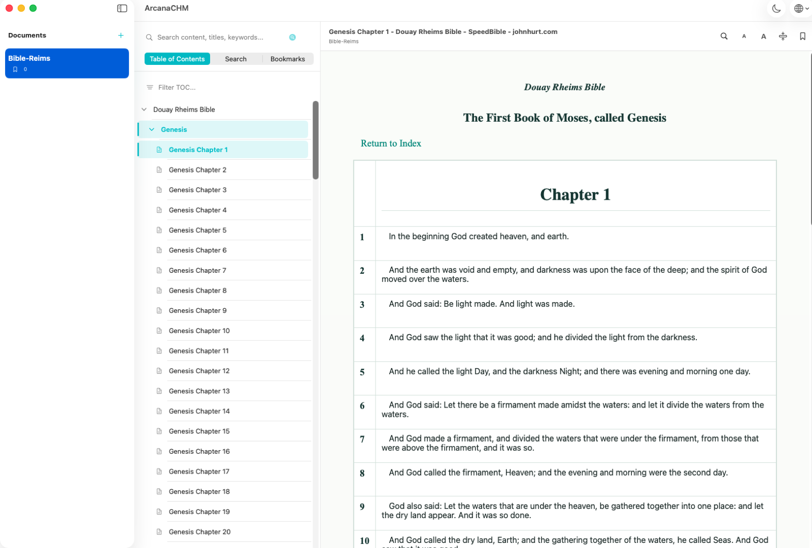

Three-pane SwiftUI layout
Sidebar TOC, content list, and WebKit reading surface — native macOS feel.
Local-first macOS CHM reader. Native SwiftUI, offline by design.
Ad-hoc signed — no “damaged” alert. Drag to Applications to install.

Sidebar TOC, content list, and WebKit reading surface — native macOS feel.
Extractor (7zz) is bundled inside the app — no Homebrew needed. Or import already-extracted folders.
Remembers the last page and scroll position per document (500ms debounced).
Full-text local search, search history, and bookmarks per book.
In-page search with match navigation, Enter key and prev/next buttons.
English / 中文 — follows system language by default, manual switch in toolbar.
Reading themes, font scaling, and focus mode for long sessions.
library.json is backed up automatically — corrupt files are restored.
No access outside the app's own data directory. Your files stay local.
| Import a CHM file | ⌘O |
| Import an extracted folder | ⇧⌘O |
| Find in page | ⌘F |
Directory tab: document navigation
Search tab: full-text local search
Favorites tab: bookmarks